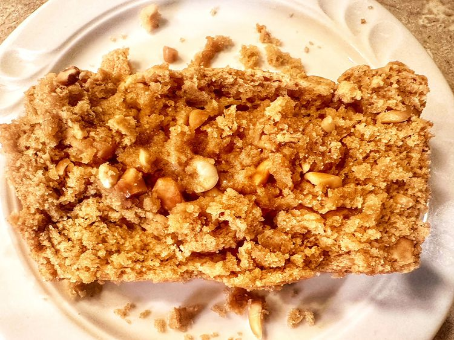

Peanut Butter Bread

Description
I am a peanut butter fiend. I will always have a giant jar of peanut butter somewhere in my kitchen.
Ingredients
- cooking spray
- 2 cups all-purpose flour
- 1/2 tsp salt
- 1 1/4 cups peanut butter
- 1 1/4 cups whole milk
- 3/4 cup brown sugar
Steps
- Preheat the oven to 350 degrees F (175 degrees C). Spray a 9x5-inch loaf pan with nonstick cooking spray. Set aside.
- Combine flour, peanut butter powder (optional), baking powder, and salt in a bowl. Set aside.
- Mix peanut butter, milk, and brown sugar together in a bowl with an electric mixer until fully combined. Add flour mixture and mix on low speed just until flour disappears; stir in peanuts. Scoop batter into the prepared loaf pan and smooth out with a spatula.
- Bake in the preheated oven until a toothpick inserted near the center comes out clean, 45 to 55 minutes. Cool in the pan on a wire rack for 10 minutes, remove from the pan, then cool completely on the wire rack.
Return to homepage